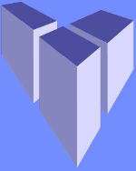

Inkscape用 phn出力拡張 仕様 (暫定版)
日本語(Japanese), English
紹介ページへ戻る
目次
免責事項
Inkscape 1.0.0 で動作確認しています。
致命的な不具合が生じることはないと思いますが、作者はいかなる責任も負いません。
ご利用は使用者の責任でお願いします。
なお、zipファイルにはソースファイルも同梱しています。
使用前の準備
ダウンロードしたzipファイルに同梱されている
[phn_output.py] と [phn_output.inx] を
Inkscapeのextensionsフォルダに入れてください。
extensionsフォルダの場所は下記の通りです。
Windowsの場合:
C:\Program Files\Inkscape\share\inkscape\extensions
Macの場合:
~/.config/inkscape/extensions
あるいは
Contents/Resources/extensions
使用方法
「名前を付けて保存」で「ファイルの種類」として「Algodoo scene (*.phn)」を選択し、適当なファイル名で保存してください。
SVGファイルとしても保存したい場合は、お手数ですが、別途 「Inkscape SVG (*.svg)」で保存する必要があります。
SVG <--> Algodoo 対応表
| SVGの要素 | Algodooの オブジェクト |
説明 | |
|---|---|---|---|
| サイズ について |
1 インチ(in) | 1 メートル | Inkscape上での1インチをAlgodooの1ｍに対応させています。 初期設定が面倒なので、example.svgをコピーして編集すると楽です。 Inkscapeに慣れていない方へのアドバイス： グリッド機能は[表示(V)]-[グリッド(G)]でオン/オフできます。 (ショートカットキー: #) |
| 円 | Inkscapeで作成した円はサークルに変換されます。 変換後のサークルはおうぎ形が非表示になります。 ※Inkscape以外のSVGエディタで作成した円は下記の楕円として扱われる場合があります。 |
||
| 楕円 |  |
Inkscapeで作成した楕円はポリゴンに変換されます。 | |
| 長方形 |  |
Inkscapeの矩形ツールで描かれた長方形はボックスに変換されます。 | |
| 角の丸い 長方形 |
 |
 |
矩形ツールで描かれた、角の丸い長方形はポリゴンに変換されます。 |
| 星形 |  |
星形ツールで描かれた図形はポリゴンに変換されます。 | |
| 星形ツールで 描いた図形 |
 |
星形ツールでは複雑な図形も描けますが、これもポリゴンに変換されます。 | |
| 螺旋形(1) |  |
らせんツールで描かれた図形は注意が必要です。 そのままでは意図した図形が出力されません。 |
|
| 螺旋形(2) | 曲線に沿ったパスを境界線に持つポリゴンが作成されてしまいます。 この時、パスの始点と終点は自動的に結ばれます(図の赤い線分)。 |
||
| ストロークを パスに変換 した螺旋形 |
 |
らせんツールで描いた図形を上手く変換する方法: 図形を選択して、[パス(P)] - [ストロークをパスに変換(S)] (ショートカットキー: Ctrl+Alt+C) |
|
| 文字列 |  |
 |
文字列には対応していません。 |
| パスに変換 した文字列 |
文字列をパスに変形した図形は出力可能です。 パスに変換する方法: 図形を選択して、[パス(P)] - [オブジェクトをパスへ(O)] (ショートカットキー: Shift+Ctrl+C) |
||
| 3D ボックス ツール で 作成した図形 |
 | 3D ボックスツールで作成した図形もこの通り！ | |
| 平面 |  |
SVGのpolylineという要素を平面に変換します。 自力で作成するのは手間なので、example.svgの平面をご利用ください。 |
|
| バネ |  |
パスで作成した線分を変換すると、バネになります。 減衰定数は0.1になるため、目的に合わせて調整してください。 ※パスで作成した図形が頂点を3つ以上持つ場合、線分に見えていてもポリゴンに変換します。 |
|
| ヒンジ | 中間マーカー付きの円(marker-mid属性を持った円)は、サークルではなくヒンジに対応します。 この時、中間マーカーの種類は関係ありません。 |
||
| モーター |  |
 |
始点マーカー付きの円(marker-start属性を持った円)は、サークルではなくモーターに対応します。 Inkscapeでは、始点マーカーとして"～start"という名前のマーカーを選ぶことで モーターの向きとマーカーの向きが揃います。 よくわからない場合は、example.svgで使用されているものを利用してください。 ※モーターはヒンジの一種ですが、中間マーカーを設定する必要はありません。 |
| トレーサー |  |
フィルター付きの円(filter属性を持った円)は、トレーサーに対応します。 フィルターの種類には関係ありません。 Inkscapeでは、「ぼかし」を設定することでfilter属性を持たせることができます。 |
|
| レーザー ポインタ |
終点マーカー付きの線分(marker-end属性を持った線分)は、レーザーポインタに対応します。 終点マーカーの種類には関係ありません。 ※終点マーカーのない線分はバネに対応しています。 |
||
| スラスター |  |
 |
始点マーカー付きの線分(marker-start属性を持った線分)は、スラスターに対応します。 始点マーカーの種類には関係ありません。 ※始点マーカーのない線分はバネに対応しています。 |
| SVGの要素 | Algodooの オブジェクト |
説明 |
以上です。お疲れさまでした。
Copyright (C) tatt61880 (たっと) ---- Twitterアカウント @tatt61880